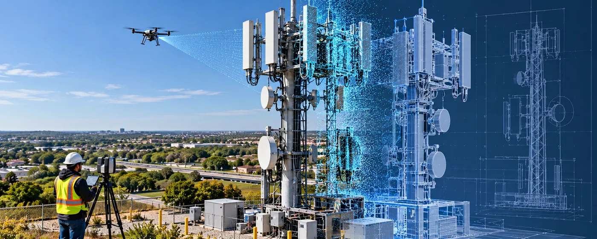

The Assignment
Telecom infrastructure is continuously upgraded and maintained, requiring engineers and field teams to have accurate, current information on towers, rooftops, equipment and existing site conditions.
The assignment involved providing recurring aerial and ground-based reality capture of telecom sites to create reliable digital documentation for engineering, design, construction and maintenance activities. The programme has supported capture of thousands of rooftops and towers across the United States.
Our Approach
CS TECH Ai's North American team combines aerial and ground-based capture with structured quality-assurance workflows to document telecom infrastructure and convert field data into engineering-ready digital information.
The engagement included:
- Aerial capture of telecom towers using trained drone pilots
- Ground-based capture of rooftop telecom infrastructure
- Detailed documentation of antennas, mounts, cables, cabinets and associated equipment
- Capture of structural and equipment conditions required by engineering teams
- Documentation of access points and existing site infrastructure
- Creation of point clouds and digital site documentation
- Development of 2D drawings and 3D as-built models
- Standardized capture protocols tailored to client requirements
- Quality assurance and verification of captured information
- Live coordination of field teams, site access, schedules and data uploads
- Recurring capture to support ongoing telecom upgrades and maintenance
The capture workflow is designed to provide engineers and project teams with an accurate representation of existing conditions without relying solely on repeated conventional site visits. All about VTS from website
Impact
The wider telecom capture programme has demonstrated 99.6% first-pass capture and 100% on-time site delivery over a documented three-month period, reflecting the scalability of the capture and QA workflow.